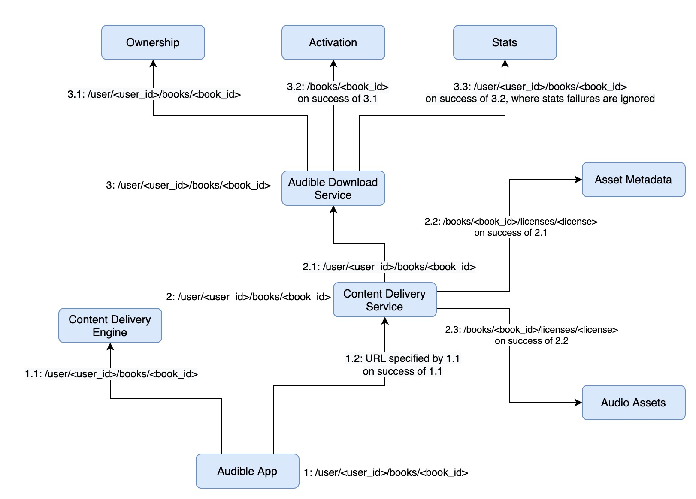
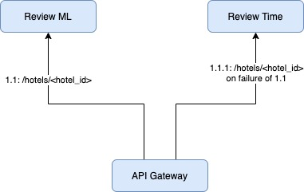
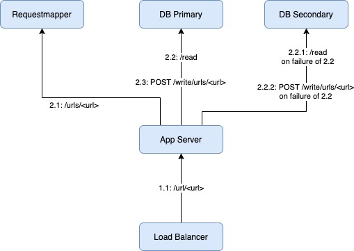
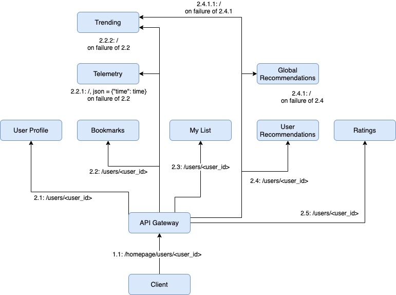

Industry Examples
Audible
Description
This diagram was taken from the AWS re:Invent 2018 talk by Audible titled Chaos Engineering and Scalability at Audible.com. This is a highly-simplified view of the actual architecture used at Audible.
Fault Analysis
The bug presented in the talk can be described in three stages.
In the first stage, there is an inconsistent content upload.
audio-assetsandasset-metadata(XML chapter descriptions) are not uploaded atomically. In the talk, an audiobook had a success upload inaudio-assetsbut failed to upload toasset-metadata. This results in the system being in an inconsistent state.In the second stage, a user attempts to access this content. The
content-delivery-servicecallsaudible-download-service, where are calls succeed, and thencontent-delivery-servicecallsaudio-assetsandasset-metadata. The final call toasset-metadatareturned an error because the chapter description was missing. The application programmer assumed thatasset-metadataalways contains the chapter description for the requested audiobook (after initial checks have passed), so there is no appropriate error handling code. As a result,content-delivery-servicereturns a generic500 Internal Server Error.In the third stage, both the system and the user responds to this generic error by initiating retries. Each retry makes all the previous requests again (and failing at
asset-metadataagain). This fault causes the system to perform work that will be abandoned, manifesting as system failure when all available compute capacity is exhausted.
We simulated the dormant fault by have an environment variable BAD_METADATA=1 in asset-metadata.
When the environment variable is set, this service always returns a 404. The other faults which exhaust
node capacity needs to be simulated in AWS.
Filibuster Analysis
No Reduction
First, let’s consider the ways each service can fail:
content-delivery-enginecan fail 4 ways: 2 exceptions and 2 error codes (any abort entire request);content-delivery-servicecan fail 6 ways: 2 exceptions and 4 error codes (any abort entire request);audible-download-servicecan fail 6 ways: 2 exceptions and 4 error codes;ownershipcan fail 5 ways: 2 exceptions, 3 error codes (any abort entire request);activationcan fail 4 ways: 2 exceptions, 2 status codes (any abort entire request);statscan fail 3 ways: 2 exceptions, 1 status codes (doesn’t impact request);
asset-metadatacan fail 5 ways: 2 exceptions, 3 status codes (any abort entire request); andaudio-assetscan fail 5 ways: 2 exceptions, 3 status codes (any abort entire request).
First, we have to consider the impact of content-delivery-engine failures and the passing execution.
Next, we consider content-delivery-service failures, where it makes no other requests.
Next, failures of the audible-download-service in isolation.
Next, we have to consider the failures of its dependencies (ownership, activation, and stats).
Now, we need to consider the additional requests that occur from content-delivery-service.
asset-metadata can fail 5 ways, but we also need to consider it’s failures in combination with
stats, as stats can fail and have no impact on whether this call is made. Therefore, we’ll
consider the way stats can fail with all possible outcomes (3 * 6).
Finally, we look at audio_assets, which is only called when the call to asset-metadata is successful,
again with all combination of how stats – called before it with no impact on the request – can fail
with it. We no longer consider all possible outcomes of asset-metadata, but only consider the failures
because it must succeed for the audio-assets call to be made.
This is the number of tests executed with Filibuster with no reduction.
Dynamic Reduction
With dynamic reduction, we can remove the following tests:
4 tests of the
content-delivery-service:404,403,500,504, as injecting faults on its dependencies causes these errors to happen;4 tests of the
audible-download-service:403,404,500,503, as injecting faults on its dependencies causes these errors to happen;15 tests that are the combination of faults from
stats, which has no impact on the outcome, combined with the possible failures ofasset-metadata; and15 tests that are the combination of faults from
statscombined with the possible failures ofaudio-assets.
This is 38 tests that do not need to be executed: \(4 + 4 + 15 + 15 = 38\). This results in the following.
This is the number of tests executed with Filibuster with dynamic reduction.
Expedia
Description
This architecture diagram is taken from the talk from Daniel and Nikos at Automating Chaos Attacks at Expedia at Chaos Conf 2020. Here is what we implemented.
Fault Analysis
In this small example, Expedia retrieves reviews for a hotel where reviews are sorted by an ML algorithm. If that service failed, the API Gateway fallbacks to retrieve reviews from another service where they are sorted by time from most recent to least recent. They validated the fallback using resilience tests. This is a fake bug, but shows how they test error handling code for this particular part of their service.
Filibuster Analysis
Given that each service, review-ml and review-time can each fail four ways, we have to explore \(1 + (4 * 4) = 17\) tests. This is the number executed by Filibuster with both dynamic reduction and without reduction.
Mailchimp
Description
This architecture diagram is taken from the talk from Caroline Dickey Think Big: Chaos Testing a Monolith at Chaos Conf 2019. Here is what we implemented.
Fault Analysis
Here’s the list of faults identified from the Mailchimp talk that is relevant in our implementation.
Fault #1 - MySQL database instance becomes read-only: Mailchimp expected that when the database became read-only the application would degrade gracefully and alerting would fire. This was mostly true: a majority of the Mailchimp application had application code that gracefully handled this database error; however, one legacy component did not have proper error handling and exposed a database error to the user in the UI.
Fault #2 -
requestmapperbecomes unavailable.requestmapper, a service for mapping pretty URLs for customer landing pages to internal URLs suddenly becomes unavailable in production.
The description of this bug in the talk is extremely vague; what appears to be happening is the following:
app-servermakes a request torequestmapperto get information about the URLs; thenwhen
requestmapperservice is down,app-servershould handle the error and continue handling the request.
The presenter said that changing the 503 Service Unavailable response to a 500 Internal Server Error
fixed the bug, but did not explain why; our best guess is that the application server has specific error
handling for a 500 Internal Server Error and no error handling for the 503 Service Unavailable.
We simulated the first fault by setting an environment variable DB_READ_ONLY=1. If set, calls to write to the
DB always returns a 403 Forbidden. For the second fault, the current version of the code throws a 500
(which the load balancer can handle), but buggy implementation throws a 503 (which the load balancer supposedly cannot handle).
Filibuster Analysis
Let’s look at what Filibuster has to consider when testing this application.
No Reduction
First, we have to consider the ways things can fail:
load-balancercan fail with 2 exceptions and 1 error code;requestmappercan fail with 2 exceptions and 1 error code;- read to
db-primarycan fail with 2 exceptions and 1 error code, only issued if
requestmappersucceeds;
- read to
- write to
db-primarycan fail with 2 exceptions and 2 error codes, only issued if
db-primarycall succeeds or fails with an error code;
- write to
- read to
db-secondarycan fail with 2 exceptions and 2 error codes, only issued if
db-primaryread ordb_primarywrite has failed; then
- read to
- write to
db-secondarycan fail with 2 exceptions and 2 error codes, only issued if
db-primaryread ordb-primarywrite has failed; anddb-secondaryfails with an error code.
- write to
Let’s start by considering the failures of just the load-balancer and the requestmapper. In this case,
we need to consider the ways that each service can fail along with the passing execution.
Next, we have to consider the failure of the db-primary read operation.
Now, we have to consider what happens when the db-primary write operation fails. We have to keep in mind the ways that things can fail: if db-primary read fails with 2 of the 4 errors, it will continue to execute the write operation; otherwise, it will not. This results in the following: \(4 + 4 + (2 \times 4)\): db-primary failures (4), db-secondary failures (4) and finally the calls in the combination: \((2 \times 4)\).
Next, we have to consider the ways that the db-secondary call can fail. Keep in mind that we have to consider that this call is only made if the db-primary read fails and db_primary write fails \((4 + 4 + (2 * 4))\) combined with the ways that the db-secondary read can fail (4). This gives us the following.
Finally, we have to consider the subsequent db-secondary write call can fail, keeping in mind that it only occurs if the previous errors occur and the db_secondary read call fails with either 2 status codes; remember, this call itself can fail 4 ways as well. Ths extends the following formula with \(((4 + 4 + (2 + 2)) * 4) + (4 + 4 + (2 * 4))\) to give us the following.
This is the number that Filibuster runs without pruning.
Dynamic Reduction
With dynamic reduction, we can only reduce 1 execution: the execution where we inject a 500 Internal Server Error
returned by the app-server to the load-balancer, as injecting any of the requestmapper failures, or
certain combinations of the db-primary and db-secondary failures cause this service to return this error already.
This results in a total of \(135 - 1 = 134\), the number that Filibuster runs with dynamic reduction.
Netflix
Description
The basis of the Netflix example comes from a talk by Casey Rosenthal and this talk from Nora Jones. These talks only show us a subset of the services that Netflix uses and one example of fallback behavior (e.g., recommendations) so we added additional fallback behavior that follows the same strategy and intuition, but isn’t the actual fallback behavior of Netflix, as that information is not publically available.
The diagram captures the microservices called when a client loads its homepage, which consists of multiple parts.
Fault Analysis
The Netflix example contains three faults that can be activated using an environment variable NETFLIX_FAULTS=true.
All three of these faults come from this talk from Nora Jones.
Here are the faults:
Call with no fallback: The
api-serverservice tries to get the user profile from theuser-profileservice; however, if this service is unavailable the entire request is failed;Retries to the same server:
The api-serverservice communicates with themy-listservice to get the user’s list; if this service is unavailable, the request is retried against the same service; andMisconfigured timeouts: The
api-serverservice communicates with theuser-profileservice with a 1 second timeout; theuser-profileservice communicates with the telemetry service, which has a 20 second timeout; causing theuser-profileservice to fail if thetelemetryservice request takes over 1 second, but less than 5 – a failure when there is no actual error.
For fault #3, CHECK_TIMEOUTS=true also needs to be used to verify timeouts execute correctly.
Filibuster Analysis
This is the analysis when the faults are not active.
No Reduction
First, let us consider the ways each service can fail.
api-gatewaycan fail 5 ways: 3 error codes, 2 exceptions;user-profilecan fail 4 ways: 2 error codes, 2 exceptions;bookmarkscan fail 4 ways: 2 error codes, 2 exceptions;telemetrycan fail 3 ways: 1 error code, 2 exceptions;trendingcan fail 3 ways: 1 error code; 2 exceptions;my-listcan fail 4 ways: 2 error codes, 2 exceptions;user-recommendationscan fail 4 ways: 2 error codes, 2 exceptions;global-recommendationscan fail 3 ways: 1 error code, 2 exceptions; andratingscan fail 4 ways: 2 error codes, 2 exceptions.
We start with the passing execution (1). We then we need to consider the ways that the call from the mobile-client
to the api-gateway can fail.
Next, we consider failures between the api-gateway and its dependencies. First, the call to user-profile.
Then, the call to bookmarks, which is only made if the previous call succeeds.
Now, if bookmarks fails, we will make a call to telemetry, which is allowed to fail, and then a call to trending.
Considering just the call to telemetry first, this gives us.
Next, the subsequent call to trending. With this call, we have to consider the following:
combinations of
bookmarkswithtrending: \(3 \times 4 = 12\)combinations of
bookmarks,telemetryandtrendingtogether: \(3 \times 4 \times 3 = 36\)
This gives us the following.
Next, we have to consider my_list. With this call, we have to consider the following:
combination of
bookmarks,telemetryandmy-list: \(4 \times 3 \times 4 = 48\)combination of
bookmarksandmy-list: \(4 \times 4 = 16\)my-listfailing in isolation: 4
This gives us the following.
Next, user-recommendations, where we have to consider the following:
combination of
bookmarks,telemetry and ``user-recommendations: \(4 \times 3 \times 4 = 48\)combination of
bookmarksanduser-recommendations: \(4 \times 4 = 16\)failure of
user-recommendationsin isolation: \(4\)
This gives us the following.
Next, global-recommendations which is called on failure of user-recommendations:
Again:
combination of
global-recommendationswithuser-recommendations: \(4 \times 3 = 12\)combination of
bookmarks,telemetry,user-recommendationsandglobal-recommendations: \(4 \times 3 \times 4 \times 3 = 144\)combination of
bookmarks,user-recommendations, andglobal-recommendations: \(4 \times 3 \times 4 = 48\)
This gives us the following.
Next, the call to trending when global-recommendations fails.
combination of
bookmarks,telemetryand the secondtelemetrycall: 4 * 3 * 3 = 36
This yields the following.
Finally, the last call to ratings.
combinations of
bookmarks,telemetry,user_recommendations,global_recommendations, andratings: \(4 \times 3 \times 4 \times 3 \times 4 = 576\)combination of
bookmarks,user_recommendations,global_recommendationsandratings: \((4 \times 4 \times 3 \times 4 = 192)\)combination of
bookmarks,user_recomendationsandratings: \((4 \times 4 \times 4) = 64\)combination of
bookmarksandratings: \((4 \times 4) = 16\)combination of
bookmarksandratings: \((4 \times 4) = 16\)combination of
user_recommendations,global_recommendations,ratings: \((4 \times 3 \times 4) = 48\)combination of
user_recommendationsandratings: \((4 \times 4) = 16\)combination of
bookmarks,telemetry, andratings: \((4 \times 3 \times 4) = 48\)combination of
bookmarks,telemetry,user_recommendations,ratings: \((4 \times 3 \times 4 \times 4) = 192\)ratings failing in isolation (\(4\))
This results in the following.
This is the exact number of test executions run by Filibuster with no dynamic reduction.
Dynamic Reduction
The structure of this application does not lend itself well to dynamic reduction: as, all of the calls are made from the top-level and therefore we have to explore all possible combinations of failures of almost all the requests.
In this example, we’re only able to use dynamic reduction to eliminate injecting status
code failures between the mobile-client and the app-server: as, we can test this
behavior indirectly by injecting failures on the app-server’s dependencies.
With Bugs
With bugs, a number of additional tests have to be run. We omit the analysis for brevity. Without dynamic reduction, it results in 4670 test executions; with 4721 test executions.